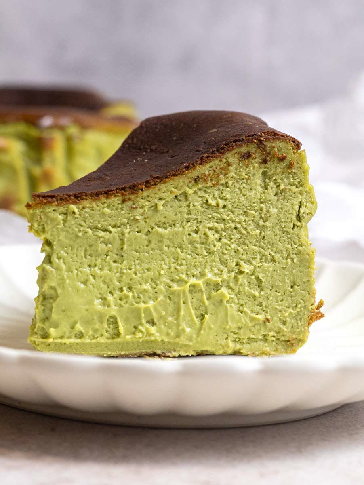

Doces · Tortas e bolos
Cheesecake basque de matcha

Ingredientes
- 500 g de cream cheese
- 200 g de açúcar
- 250 ml de creme de leite
- 4 ovos
- 1 colher e 1/2 (sopa) de matcha em pó
- 1 colher (sopa) de farinha de trigo
Modo de preparo
- Pré-aqueça o forno a 200 °C (400 °F). Forre uma fôrma de fundo removível com papel-manteiga.
- Bata o cream cheese com o açúcar até ficar cremoso.
- Misture o creme de leite e a farinha peneirada.
- Acrescente o matcha e incorpore delicadamente.
- Despeje na fôrma e asse até a superfície dourar e o centro ficar levemente tremulo.
- Deixe esfriar antes de servir.
Observação
Receita adaptada de referência visual (Pinterest).